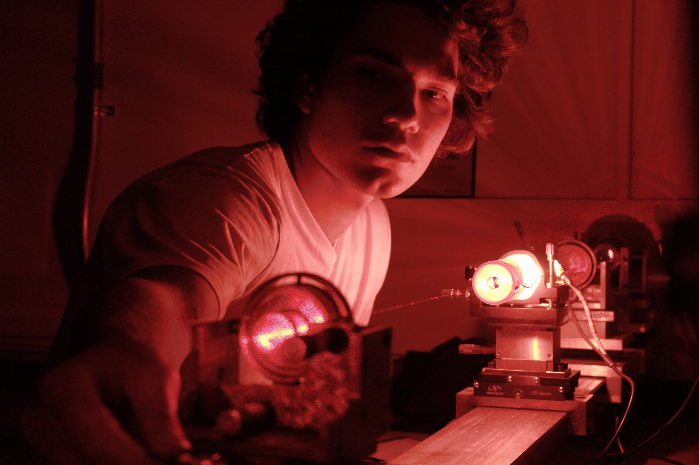
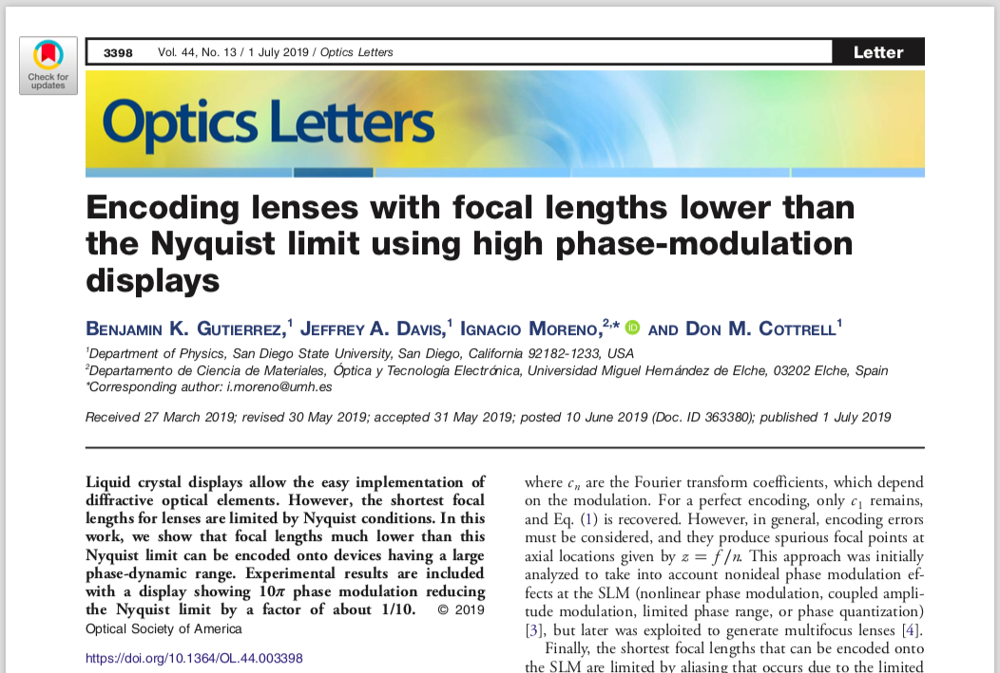
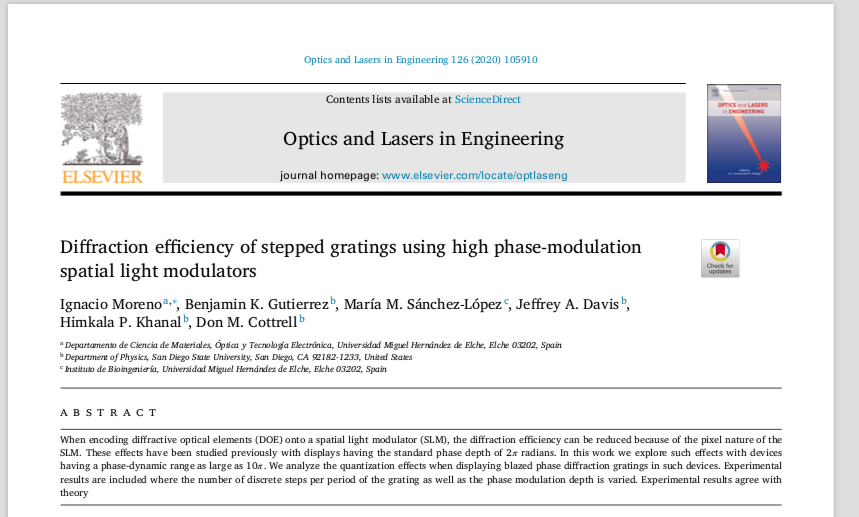
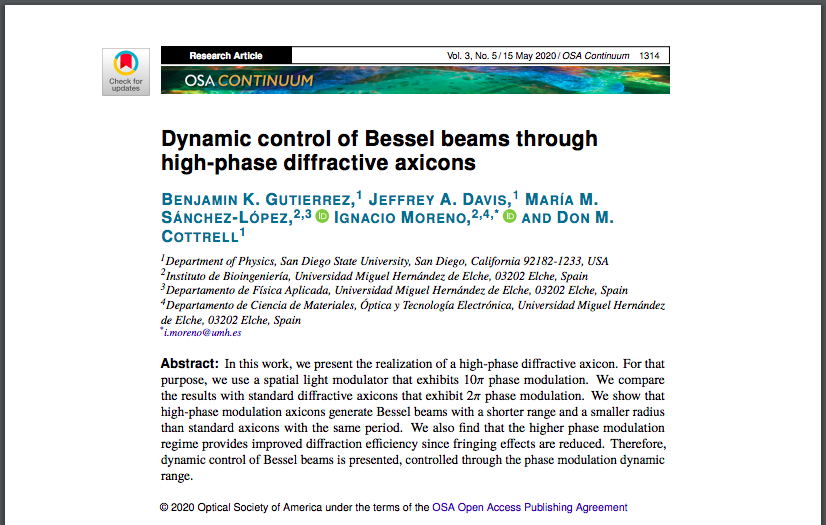
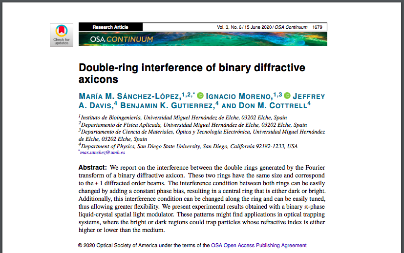
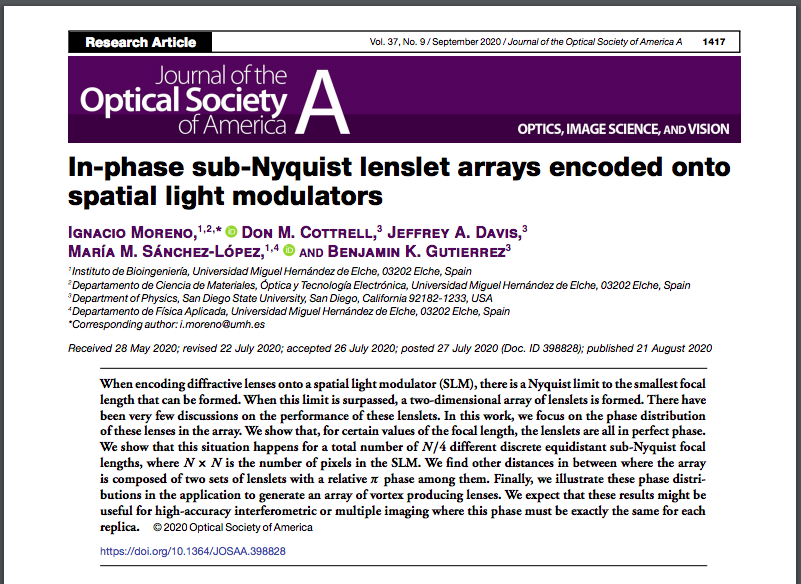

01 / Optics
Research
High phase-delay spatial light modulators, and the extra degree of freedom they give a phase mask.

My research has focused on high phase delay spatial light modulators (SLMs) and their use in encoding phase masks with capabilities beyond that of a standard 2π SLM. This high-phase SLM enables a new degree of freedom, the phase depth M. Using this parameter, common phase masks may be augmented to exhibit dynamic abilities. We have demonstrated the use of this new parameter on common phase masks such as diffractive lenses, diffractive axicons, and lenslet arrays.
Papers

Encoding lenses with focal lengths lower than the Nyquist limit using high phase-modulation displays
Read paper →
Diffraction efficiency of stepped gratings using high phase-modulation spatial light modulators
Read paper →
Dynamic control of Bessel beams through high-phase diffractive axicons
Read paper →
Double-ring interference of binary diffractive axicons
Read paper →